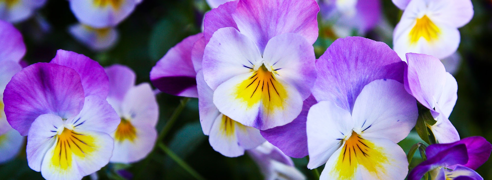
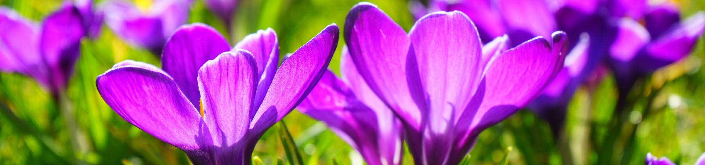
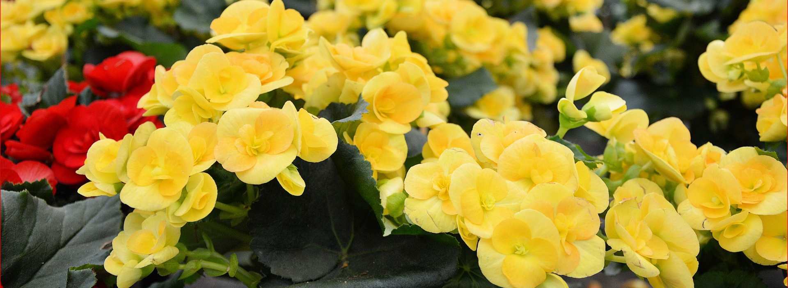
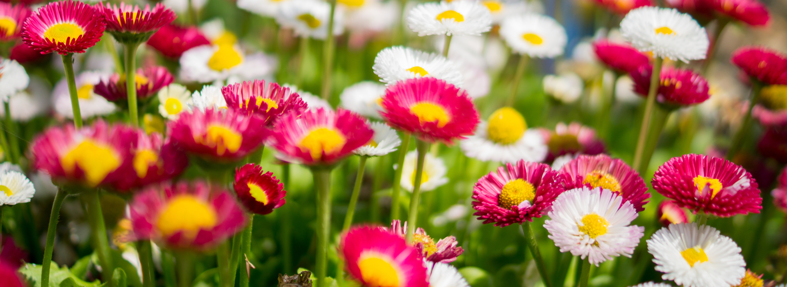

Sunnyside Nurseries
is a full service garden centre. Since 1980 we have provided our customers with a wide variety of high quality plants as well as bulk materials, garden art, pottery, trees, tools and yes we DELIVER plants and bulk material!
Sunnyside Nurseries
is committed to helping our customers acquire the plants, garden products and knowledge necessary to create their ideal garden space.
Visit us and BRING YOUR GARDEN TO LIFE!



